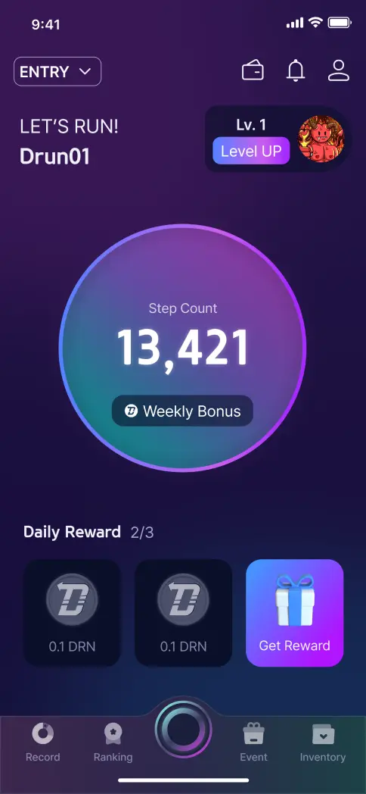

How can we encourage users to maintain a consistent running routine? Based on performance tracking, D-RUN is a health-focused running service that leverages NFTs to provide motivation for running and opportunities to form local "running crews." This collaborative project with DongA Ilbo recently conducted an open event at the Seoul Marathon, introducing a novel approach to fostering a running community.
Complexity
Many existing NFT apps often mimic English pronunciation, making it difficult to understand their functionality. Moreover, processes like wallet setup or linking can be intricate.
Challenges
Running alone makes it hard to sustain consistent practice. Although I started practicing running for a marathon, it's been tough to keep up the routine.
Lack of Content
There's a shortage of space and content that clearly showcases the number of people preparing for a marathon and their achievements.
Ideation & Sketch
Based on UX research, I ideated the UI for the application. Keeping the original concept, I focused on simplifying complex elements. The main features revolve around measuring steps, tracking running progress, and earning coins through these activities. The design aims to provide users easy access to coin mining and NFTs while practicing marathon running.
Clarity
Conciseness
Approachability
3 Main Modes

Entry Mode
As a mode designed for beginners unfamiliar with NFTs, even those who don't own any NFTs can participate. Depending on the number of steps taken, you can receive three rewards each day.
Running Mode
This mode, designed for NFT owners, allows users to acquire coins based on their running records. The efficiency of coin acquisition is determined by the NFTs they own, which also influence the distance and time available for use.
Marathon Mode
This mode is intended for marathon practice, and users can measure their performance or records using either distance or time.
Other Pages
Wallet
Users can connect their coin wallets to send or receive coins. They can also review their coin transaction history, including coins earned through running.
Ranking
By comparing their performance with other users, the ranking feature encourages users to take an interest in marathons, showing that many people are participating together.